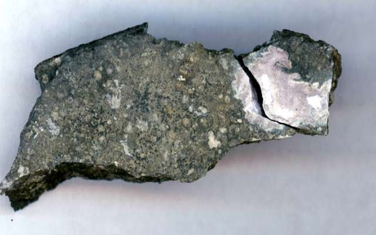

Кюрий
Кю́рий (химический символ — Cm, от лат. Curium) — химический элемент 3-й группы (по устаревшей классификации — побочной подгруппы третьей группы, IIIB) седьмого периода периодической системы химических элементов Д. И. Менделеева, с атомным номером 96.
Впервые изотоп 242Cm получен в 1944 г. американскими физиками Р. Джеймсом, А. Гиорсо и Г. Сиборгом при облучении 239Pu ускоренными α-частицами. Назван в честь П. Кюри и М. Склодовской-Кюри.

Металлический кюрий получают восстановлением оксидов или фторидов лантаном или литием. Изотопы кюрия получают в ядерных реакторах при облучении нейтронами Рu или Am. Изотопы 242Сm (Т1/2 162,8 сут) и 244Сm (Т1/2 18,11 г.) используют в изотопных источниках тока (1 г 242Cm выделяет 120 Вт тепловой энергии), для получения транскюриевых элементов, чистого 238Рu; в смеси с Be – для приготовления нейтронных источников.